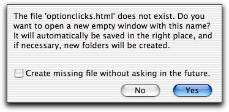

The term "electric" is used in the sense of "automatic, power assisted behavior", which is intended to save time, keystrokes, and brainpower. All the "electric" features are features, which makes Alpha do automatic typing for you. CSS modes electric preferences are set using in the menu.
Command-double-clicking on a CSS property opens a dialog box, where you can edit the value of the property.
Command-double-clicking on an absolute URL sends the URL to your web browser. This is not limited to CSS mode. It is a general feature of Alpha.
Command-double-clicking on a relative URL attribute opens a new window with the file if the file exists and is a text file. If it does not exist, a dialog box appears as the one shown below. As you see, a new empty window can be opened with the name of the file. This window is automatically saved in the right place, and if necessary new folders are created. Thus, if you are making a new set of pages, you can make links to the ones you have not written yet and then, by cmd-double-clicking, let Alpha make empty files which are saved where you want them.

If you press the two curly braces in the right hand corner of the window (the so called 'funcs menu'), this menu will display an item for each selector in your file. You can then easily jump to a selector by selecting it in the menu.
The function Reload in browser reloads the frontmost window in your browser. The idea is that if the frontmost window in the browser uses the style sheet you are editing, so you can quickly reload the page to see the effect of your changes to the style sheet. Reloading the page currently works with Netscape, Internet Explorer, Mozilla, Opera, Safari, and iCab.